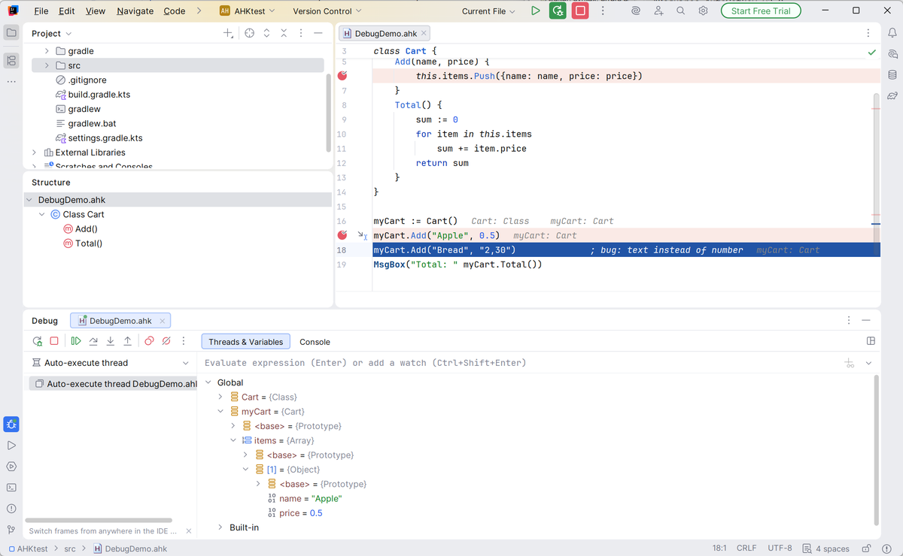
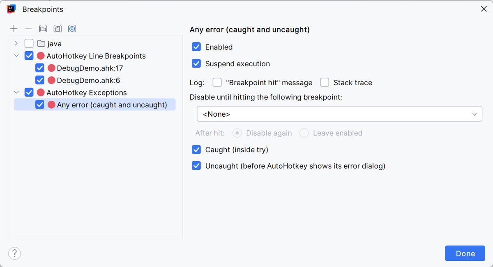
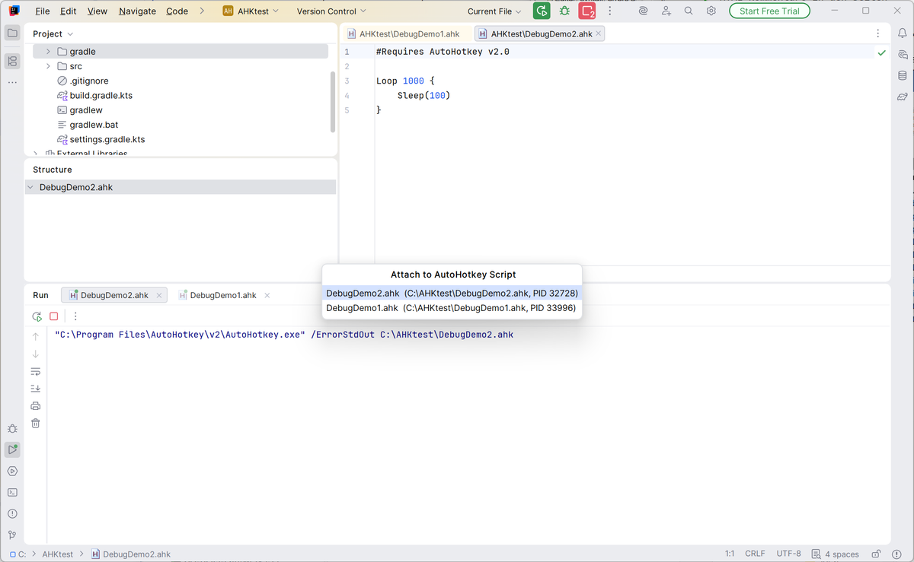

The debugger runs a script under control of the IDE: it stops at breakpoints, executes the script line by line, and shows the call stack and the values of variables, which can also be changed. It uses the debugger engine built into AutoHotkey v2 (the DBGp protocol), so no additional software is needed.
v2\AutoHotkey.exe, or AutoHotkey32.exe/AutoHotkey64.exe with 32-bit/64-bit in #Requires), also when the settings name the launcher.The Debug tool window opens with the tabs Threads & Variables (frames, variables, watches) and Console.

The plugin opens a port on 127.0.0.1 and starts
interpreter /ErrorStdOut /Debug=127.0.0.1:port script parameters
AutoHotkey connects to the IDE before the first line of the script runs. The plugin then sends the breakpoints and lets the script run. If AutoHotkey does not connect within 10 seconds, the plugin ends the process. Only connections from the local computer are used.
} or from the head of a function. The script then stops at that line; the breakpoint still counts as verified.The engine of AutoHotkey cannot evaluate expressions. The plugin therefore accepts a variable or member path as condition and as log expression: debug, obj.flag, arr[1], m["key"], this.count. Other expressions (i > 5, IsSet(x)) are ignored, and the console says so.
path = value each time the breakpoint is hit.Stop only for a particular item: compute the condition in the script and use the variable as condition.
for index, item in items {
isLast := (index = items.Length)
Process(item) ; breakpoint with condition: isLast
}
Watch a value without stopping: breakpoint with Suspend off and log expression job.state. The console shows job.state = "running" each time the line is reached.
Run > View Breakpoints has one entry AutoHotkey Exceptions, disabled by default. Enable it to stop where an error is thrown. AutoHotkey reports no error classes, so it applies to all errors; two check boxes choose which:
| Check box | Default | Stops at |
|---|---|---|
| Caught (inside try) | off | errors that a try handles |
| Uncaught (before AutoHotkey shows its error dialog) | on | errors that would end the thread with the error dialog of AutoHotkey |
The script stops at the line of the error; the console says which kind of error it was. The error message itself is not available at this point: it appears when you continue (for an uncaught error in the error dialog of AutoHotkey). Inspect the variables to find the cause.
With the default (uncaught only) the debugger stops in line 3, not in line 6.
Divide(a, b) => a / b
values := [10, 0]
result := Divide(100, values[2]) ; stops here: division by zero, not caught
try {
x := Divide(1, 0) ; caught: no stop (unless "Caught" is checked)
} catch ZeroDivisionError {
}

| Action | Key | Effect |
|---|---|---|
| Resume Program | F9 | run to the next breakpoint |
| Pause Program | stop where the script is | |
| Step Over | F8 | execute the current line, without stopping inside called functions |
| Step Into | F7 | go into the function called in the current line |
| Step Out | Shift+F8 | run until the current function returns |
| Run to Cursor | Alt+F9 | run to the line of the caret (a temporary breakpoint) |
| Stop | Ctrl+F2 | end the script |
Pause on a script that waits for hotkeys, timers or GUI events (no line is running) stops without a call stack; the console says "Paused while the script is idle". Set a breakpoint in the hotkey or timer and resume instead.
The frames list shows the call stack, the innermost call first, each with the function or thread and file and line: Add(), Auto-execute thread, the hotkey or timer that started the thread. Calls of built-in functions such as Sleep() or MsgBox() appear as frames of their own. Click a frame to open its line and to see its variables.
A_Index, A_Args, Gui, MsgBox ...) are in the sub-group Built-in of Global, so that your own globals are easy to find.[1], [2] ..., map entries with their key, properties with their name; <base> is the prototype the object is based on. Large objects show 100 children at a time; a link at the end loads the next ones.integer, string, float ...), for an object its class (Array, Map, Cart ...).Set Value (F2 on a variable, a member or an element) changes the value in the running script. Enter
| Input | Result |
|---|---|
42, -3, 0x1F | Integer (hexadecimal is converted) |
1.5, -0.25 | Float |
true, false | 1, 0 |
"text" or 'text' | String; escapes as in AutoHotkey: `n, `t, `", `` |
Text without quotes is rejected, because in AutoHotkey it would be a variable name. A variable that holds an object can be overwritten with a number or a string; <base> cannot be changed.
As for conditions, only variables and member paths can be evaluated, because AutoHotkey cannot evaluate expressions or calls:
| Allowed | Not possible |
|---|---|
name, obj.key, obj.a.b, arr[1], arr[-1], m["key"], m['key'], this.items[2].name, A_Index | a + b, StrLen(s), obj.Method(), m[key] with a variable as key, %name% |
nested in obj.nested.value the value of obj.nested. Built-in functions and classes, calls and definitions show no value.While the script is suspended, the editor shows name = value at the end of the lines in which a variable of the current function (or of the top-level code) is used, up to the current line. Built-in variables and members are not shown. Switch this off with the setting Show values inline (Settings > Build, Execution, Deployment > Debugger > Data Views).
Inline values at a breakpoint in the last line.
Total(prices) {
sum := 0 sum = 7.5
for price in prices { price = 2.5
sum += price
}
return sum ← suspended
}
Mark Object (F11 on an object in the variables view) gives the object a label of your choice. Every variable or element that refers to the same object shows the label too; this answers "is this the same object?".
The Console tab shows the output of the script (FileAppend ..., "*"), errors on loading, the messages of the debugger (ignored conditions, exception stops, log messages) and the text of OutputDebug:
OutputDebug "Loaded " items.Length " items"
OutputDebug is the easiest way to trace a script without stopping it.
Run > Attach to AutoHotkey Script... lists the AutoHotkey v2 scripts running on this computer (name, path and process id) and attaches the debugger to the chosen one. This is useful for scripts that run permanently, for example started with Windows.

The toolbar button Detach ends the debug session and leaves the script running without debugger, also for a script the IDE started. Breakpoints have no effect any more.
A small script with a class to try the debugger.
#Requires AutoHotkey v2.0
class Cart {
items := []
Add(name, price) {
this.items.Push({name: name, price: price}) ; (2) breakpoint here
}
Total() {
sum := 0
for item in this.items
sum += item.price
return sum
}
}
myCart := Cart()
myCart.Add("Apple", 0.5) ; (1) breakpoint here
myCart.Add("Bread", "2,30") ; bug: text instead of number
MsgBox("Total: " myCart.Total())
myCart. Expand it: items is an empty array.Add. Its frame is shown above Auto-execute thread; the variables show name, price and this.price: "2,30", a string. Press F2 on price and enter 2.3 to fix the value for this run.myCart.items[2].price, remove the breakpoints and press F9: the message box shows the total.Total at sum += item.price, where the text cannot be added, and item shows the culprit.OnExit handlers may not run. Detach lets the script continue normally.#SingleInstance applies as when running: debugging a script that already runs replaces or keeps the other instance according to its mode.